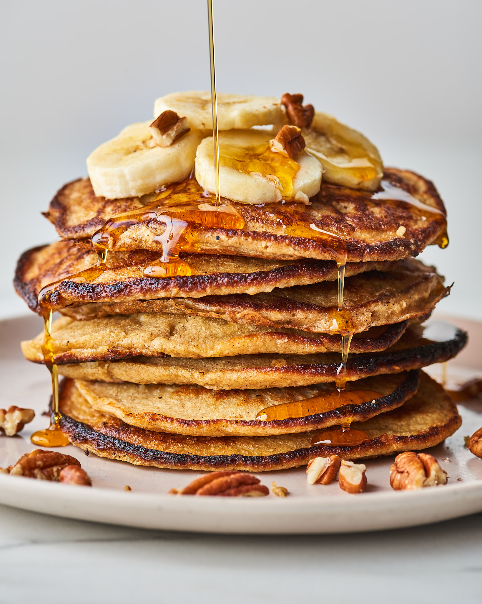

Oats And Banana Pancakes

Description
These pancakes are a healthy and delicious handy-breakfast option that will start your day in a sugar-coated mood. They’re sweetened with banana, kissed with cinnamon, and also happen to be gluten-free. Also perfect when you are in a rush because it takes only 5 minutes to prepare and barely seconds to gobble it down.
Ingredients
- 2 eggs
- 2 bananas
- 1/3 (30 g) cup of instant oats (gluten-free)
- 1/4 tsp of baking powder
- Cinnamon to taste
- 1/2 tsp of vanilla extract
- 1 stevia bag or any other sweetener
Steps
- Put the 1/3 cup of instant oats in the blender and blend it until it looks like flour.
- Crack and add the eggs to the blender.
- Peel and add the bananas along with the baking powder, cinnamon, vanilla extract and stevia (or your favourite sweetener to taste) to the mix.
- Blend it all out until smooth and thick. Next, spray some oil over a frying pan and with a ladder add spoonfuls of the batter and cook until golden brown on both sides and cooked through.
- Finally, serve with maple syrup/honey and fresh fruit.